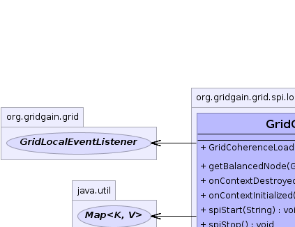
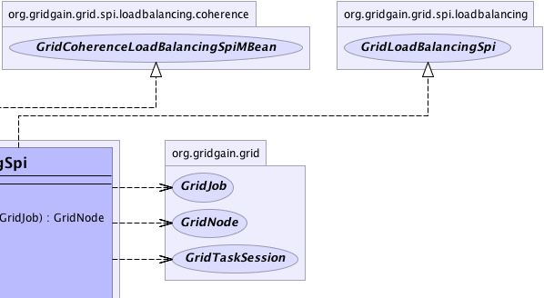
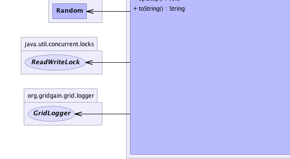
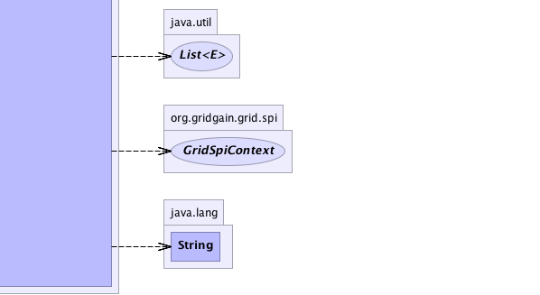

org.gridgain.grid.spi.GridSpiAdapter
org.gridgain.grid.spi.loadbalancing.coherence.GridCoherenceLoadBalancingSpi
org.gridgain.grid.spi.GridSpiAdapter
org.gridgain.grid.spi.loadbalancing.coherence.GridCoherenceLoadBalancingSpi
|
GridGain™ 3.1.1c
Community Edition |
|||||||||
| PREV CLASS NEXT CLASS | FRAMES NO FRAMES | |||||||||
| SUMMARY: NESTED | FIELD | CONSTR | METHOD | DETAIL: FIELD | CONSTR | METHOD | |||||||||
java.lang.Object
@GridSpiInfo(author="GridGain Systems, Inc.",
url="www.gridgain.com",
email="support@gridgain.com",
version="3.1.1c.19062011")
@GridSpiMultipleInstancesSupport(value=true)
public class GridCoherenceLoadBalancingSpiLoad balancing SPI which uses data affinity for routing jobs to remote nodes. It provides ability to collocate computations with data. Coherence Cache provides partitioned cache feature which allows you to segment your cached data across cluster. This SPI delegates to Coherence Cache to find out which node is responsible for caching data and routes a job to it.
Note, that instead of regular GridJob, this SPI expects GridCoherenceAffinityJob
which allows user to specify affinity key and cache name.
GridTask.map(List, Object)
implementation use load balancer to find out the node this job should be routed to
(see GridLoadBalancerResource documentation for information on how a load balancer
can be injected into your task). However, the preferred way here is to use
GridTaskSplitAdapter, as it will handle affinity assignment of jobs to nodes
automatically. Node that when working with affinity load balancing, your task's
map(..) or split(..) methods should return GridCoherenceAffinityJob
instances instead of GridJob ones. GridCoherenceAffinityJob adds two additional
methods to grid job: GridCoherenceAffinityJob.getAffinityKey() and
GridCoherenceAffinityJob.getCacheName() which will allow GridGain to
delegate routing to Coherence Cache, so jobs for the same cache with the same key will
be always routed to the same node. In case if regular
GridJob is returned, not the GridCoherenceAffinityJob, it will be routed
to a randomly picked node.
Here is an example of a grid task that uses affinity load balancing. Note how load balancing jobs is absolutely transparent to the user and is simply a matter of proper grid configuration.
public class MyFooBarCoherenceAffinityTask extends GridTaskSplitAdapter<List<Integer>,Object> {
// For this example we receive a list of cache keys and for every key
// create a job that accesses it.
@Override
protected Collection<? extends GridJob> split(int gridSize, List<Integer> cacheKeys) throws GridException {
List<MyGridAffinityJob> jobs = new ArrayList<MyGridAffinityJob>(gridSize);
for (Integer cacheKey : cacheKeys) {
jobs.add(new MyFooBarCoherenceAffinityJob(cacheKey));
}
// Node assignment via load balancer
// happens automatically.
return jobs;
}
...
}
Here is the example of grid jobs created by the task above:
public class MyFooBarCoherenceAffinityJob extends GridCoherenceAffinityJobAdapter<Integer, Serializable> {
...
private static final String CACHE_NAME = "myDistributedCache";
public MyFooBarCoherenceAffinityJob(Integer cacheKey) {
super(CACHE_NAME, cacheKey);
}
public Serializable execute() throws GridException {
...
// Access data by the same key returned in 'getAffinityKey()' method
// and for cache with name returned in 'getCacheName()'.
NamedCache mycache = CacheFactory.cache(getCacheName);
mycache.get(getAffinityKey());
...
}
}
Below is a Java example of configuration for Coherence affinity load balancing SPI:
GridCoherenceLoadBalancingSpi spi = new GridCoherenceLoadBalancingSpi(); GridConfigurationAdapter cfg = new GridConfigurationAdapter(); // Override default load balancing SPI. cfg.setLoadBalancingSpi(spi); // Starts grid. G.start(cfg);Here is Spring XML configuration example:
<property name="loadBalancingSpi">
<bean class="org.gridgain.grid.spi.loadBalancing.coherence.GridCoherenceLoadBalancingSpi"/>
</property>
For more information, how to create and use Coherence distributed cache see Partitioned Cache Service

For information about Spring framework visit www.springframework.org
| Wiki | |
| Forum |
|  |  |
|  |  |
| Constructor Summary | |
|---|---|
GridCoherenceLoadBalancingSpi()
|
|
| Method Summary | |
|---|---|
GridNode |
getBalancedNode(GridTaskSession ses,
List<GridNode> top,
GridJob job)
Gets balanced node for specified job within given task session. |
void |
onContextDestroyed()
Callback invoked prior to stopping grid before SPI context is destroyed. |
void |
onContextInitialized(GridSpiContext spiCtx)
Callback invoked when SPI context is initialized. |
void |
spiStart(String gridName)
This method is called to start SPI. |
void |
spiStop()
This method is called to stop SPI. |
String |
toString()
|
| Methods inherited from class org.gridgain.grid.spi.GridSpiAdapter |
|---|
assertParameter, configInfo, createSpiAttributeName, getAuthor, getConsistentAttributeNames, getGridGainHome, getLocalNodeId, getName, getNodeAttributes, getSpiContext, getStartTimestamp, getStartTimestampFormatted, getUpTime, getUpTimeFormatted, getVendorEmail, getVendorUrl, getVersion, injectables, registerMBean, setJson, setName, startInfo, startStopwatch, stopInfo, unregisterMBean |
| Methods inherited from class java.lang.Object |
|---|
clone, equals, finalize, getClass, hashCode, notify, notifyAll, wait, wait, wait |
| Methods inherited from interface org.gridgain.grid.spi.GridSpi |
|---|
getName, getNodeAttributes |
| Methods inherited from interface org.gridgain.grid.spi.GridSpiJsonConfigurable |
|---|
setJson |
| Methods inherited from interface org.gridgain.grid.spi.GridSpiManagementMBean |
|---|
getAuthor, getGridGainHome, getLocalNodeId, getName, getStartTimestamp, getStartTimestampFormatted, getUpTime, getUpTimeFormatted, getVendorEmail, getVendorUrl, getVersion |
| Constructor Detail |
|---|
public GridCoherenceLoadBalancingSpi()
| Method Detail |
|---|
public void spiStart(@Nullable
String gridName)
throws GridSpiException
spiStart in interface GridSpiGridSpiException - Throws in case of any error during SPI start.gridName - Name of grid instance this SPI is being started for
(null for default grid).
public void spiStop()
throws GridSpiException
Note that this method can be called at any point including during recovery of failed start. It should make no assumptions on what state SPI will be in when this method is called.
spiStop in interface GridSpiGridSpiException - Thrown in case of any error during SPI stop.
public void onContextInitialized(GridSpiContext spiCtx)
throws GridSpiException
This method is invoked after GridSpi.spiStart(String) method is
completed, so SPI should be fully functional at this point. Use this
method for post-start initialization, such as subscribing a discovery
listener, sending a message to remote node, etc...
onContextInitialized in interface GridSpionContextInitialized in class GridSpiAdapterGridSpiException - If context initialization failed (grid will be stopped).spiCtx - Spi context.public void onContextDestroyed()
If GridSpiAdapter is used for SPI implementation, then it will
replace actual context with dummy no-op context which is usually good-enough
since grid is about to shut down.
onContextDestroyed in interface GridSpionContextDestroyed in class GridSpiAdapter
public GridNode getBalancedNode(GridTaskSession ses,
List<GridNode> top,
GridJob job)
throws GridException
getBalancedNode in interface GridLoadBalancingSpiGridException - If failed to get next balanced node.ses - Grid task session for currently executing task.top - Topology of task nodes from which to pick the best balanced node for given job.job - Job for which to pick the best balanced node.
public String toString()
toString in class Object
|
GridGain™ 3.1.1c
Community Edition |
|||||||||
| PREV CLASS NEXT CLASS | FRAMES NO FRAMES | |||||||||
| SUMMARY: NESTED | FIELD | CONSTR | METHOD | DETAIL: FIELD | CONSTR | METHOD | |||||||||
|
GridGain = High Performance Cloud Computing
|
|

|
|